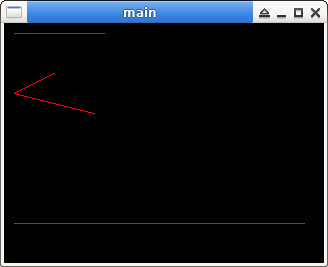

參考資訊：
https://people.scs.carleton.ca/~claurend/Courses/COMP2401/Notes/COMP2401_Ch8_Graphics.pdf
main.c
#include <stdio.h>
#include <unistd.h>
#include <stdlib.h>
#include <X11/Xlib.h>
int main(int argc, char *argv[])
{
GC gc = 0;
Window win = 0;
XColor xcolour = { 0 };
Display *display = NULL;
XPoint pt[3] = { {50, 50}, {10, 70}, {90, 90} };
XSegment sg[1] = { { 10, 200, 300, 200} };
display = XOpenDisplay(NULL);
win = XCreateSimpleWindow(
display,
RootWindow(display, 0),
0,
0,
320,
240,
0,
0,
0);
XStoreName(display, win, "main");
gc = XCreateGC(display, win, 0, NULL);
XMapWindow(display, win);
XFlush(display);
usleep(20000);
XSetForeground(display, gc, 0xff0000);
XDrawLine(display, win, gc, 10, 10, 100, 10);
XDrawLines(display, win, gc, pt, 3, CoordModeOrigin);
XDrawSegments(display, win, gc, sg, 1);
XFlush(display);
usleep(3000000);
XUnmapWindow(display, win);
XDestroyWindow(display, win);
XCloseDisplay(display);
return 0;
}
編譯、測試
$ gcc main.c -o main -lX11 $ ./main
